中学理科 生物分野（人体） 図で確認・ミニテストで実力チェック
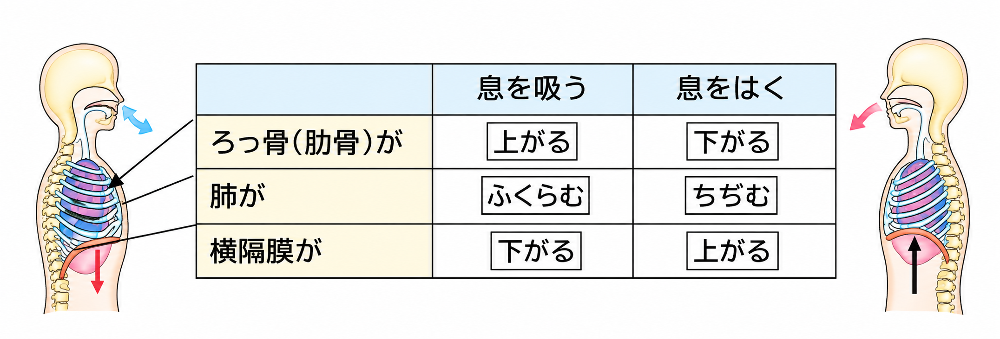
鼻や口から吸った空気は、気管を通り、枝分かれした気管支を通って肺に入ります。
肺には筋肉がないので、肺は自分でふくらんだり、ちぢんだりすることができません。肺のまわりのろっ骨（肋骨）とその間の筋肉、そして肺の下にある横隔膜が動くことで、空気が出入りします。
| 息を吸うとき | 息をはくとき | |
|---|---|---|
| ろっ骨 | 上がる | 下がる |
| 横隔膜 | 下がる | 上がる |
| 胸の中の空間 | 広くなる | せまくなる |
| 肺 | ふくらむ（空気が入る） | ちぢむ（空気が出る） |
ろっ骨と横隔膜は、いつも反対の向きに動きます。「吸うとき、ろっ骨は上、横隔膜は下」と覚えましょう。
肺には①がないため、自分でふくらむことができない。息を吸うときは、ろっ骨が②がり、③が下がって、肺が④。息をはくときは、ろっ骨が下がり、横隔膜が⑤がって、肺がちぢむ。
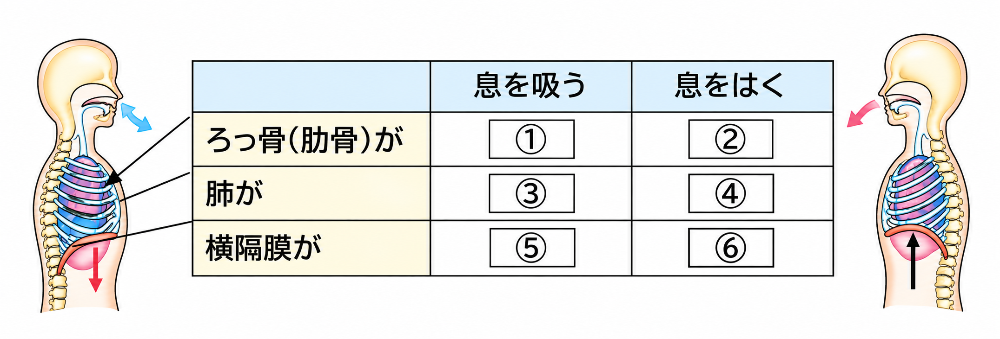
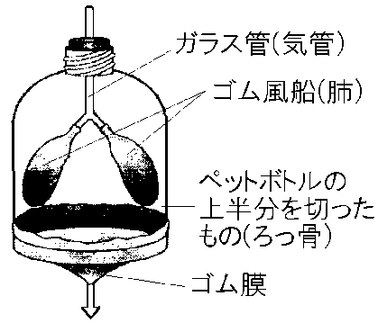
ペットボトルとゴム風船、ゴム膜を使って、呼吸のしくみを調べる模型をつくることができます。模型の各部分は、ヒトの体の次の部分にあたります。
| 模型 | ヒトの体 |
|---|---|
| ガラス管（ストロー） | 気管 |
| ゴム風船 | 肺 |
| ペットボトル | ろっ骨で囲まれた胸の部分 |
| ゴム膜 | 横隔膜 |
ゴム膜を下に引くと、ペットボトル内の空間が広がって圧力（気圧）が下がり、ゴム風船に空気が入ってふくらみます。これは息を吸うときのようすです。
ゴム膜をもどすと、ペットボトル内の圧力が上がり、ゴム風船から空気が出てしぼみます。これは息をはくときのようすです。
模型のゴム風船は①、ゴム膜は②、ガラス管は③にあたる。ゴム膜を下に引くと、ペットボトル内の圧力が④、ゴム風船は⑤。これは息を⑥ときのようすを表している。
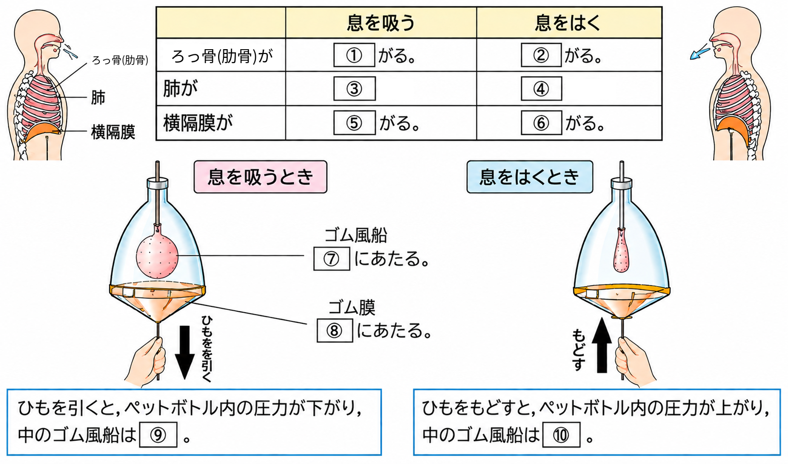
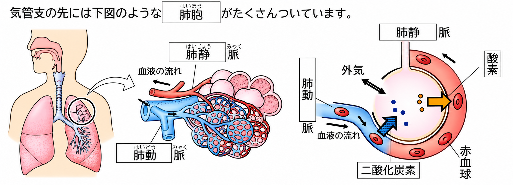
気管は枝分かれして気管支となり、その先には肺胞という小さな袋がたくさんついています。肺胞のまわりは毛細血管が取り囲んでいます。
肺胞の中の空気から酸素が毛細血管の血液にとり入れられ（赤血球が運びます）、血液中の二酸化炭素が肺胞の中に出されます。これを気体の交換（ガス交換）といいます。
心臓から肺へ向かう血液が流れる血管を肺動脈（二酸化炭素が多い血液）、肺から心臓へもどる血液が流れる血管を肺静脈（酸素が多い血液）といいます。
肺胞がたくさんあることで、肺の内部の表面積が大きくなり、酸素と二酸化炭素の交換を効率よく行うことができます。
気管支の先には①という小さな袋がたくさんあり、そのまわりを②が取り囲んでいる。肺胞では、空気中の③が血液にとり入れられ、血液中の④が肺胞に出される。肺胞がたくさんあることで、肺の⑤が大きくなり、効率よく気体の交換ができる。
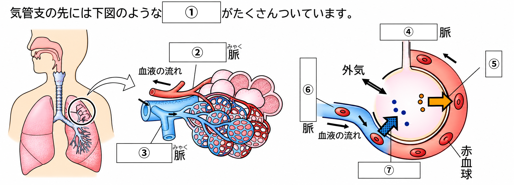
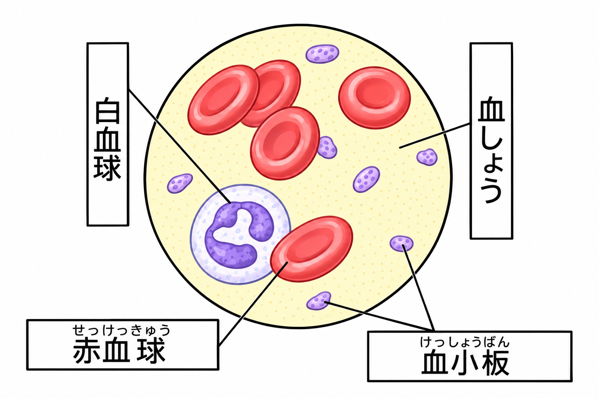
血液は、固形の成分（赤血球・白血球・血小板）と、液体の成分（血しょう）からできています。
| 成分 | 形 | はたらき |
|---|---|---|
| 赤血球 | 中央がくぼんだ円盤形 | ヘモグロビンという赤い色素をふくみ、酸素を運ぶ |
| 白血球 | いろいろな形（形を変えて動く） | 体に入った細菌などの異物を分解して体を守る |
| 血小板 | 小さく、不規則な形 | 出血したときに血液を固める（傷口をふさぐ） |
| 血しょう | 液体 | 養分や二酸化炭素などの不要な物質を運ぶ |
ヘモグロビンは、酸素が多いところ（肺）では酸素と結びつき、酸素が少ないところ（体の各部の細胞）では酸素をはなす性質があります。この性質によって、肺でとり入れた酸素を全身の細胞に届けることができます。
血液の固形の成分のうち、酸素を運ぶのは①で、その中には②という赤い色素がふくまれている。細菌などの異物を分解するのは③、出血したときに血液を固めるのは④である。液体の成分である⑤は、養分や不要な物質を運ぶ。
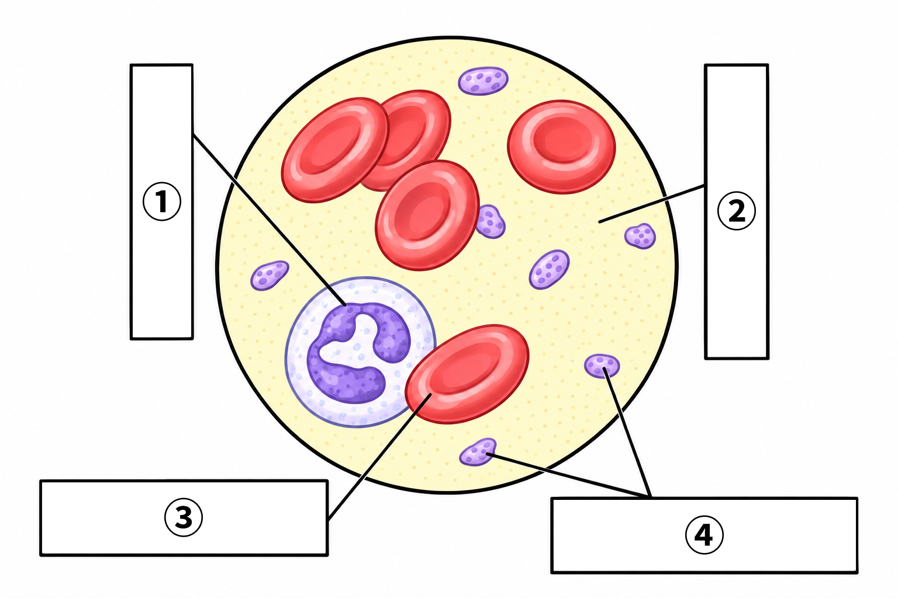
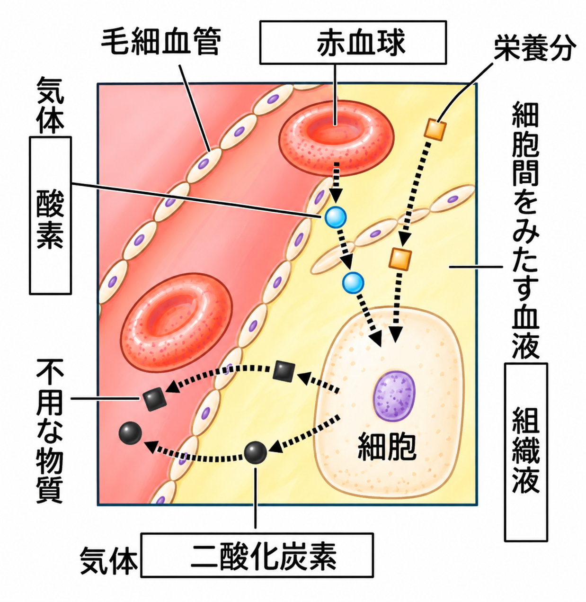
毛細血管のかべはとてもうすく、血しょうの一部が毛細血管からしみ出して、細胞のまわりを満たしています。これを組織液といいます。
血液と細胞の間の物質のやりとりは、この組織液を仲立ちにして行われます。
・赤血球が運んできた酸素や、血しょうにとけた養分は、組織液を通して細胞にわたされます。
・細胞でできた二酸化炭素などの不要な物質は、組織液にとけて血液にもどされます。
組織液の一部はリンパ管に入り、リンパ液になります。
毛細血管からしみ出した①は、細胞のまわりを満たし、②とよばれる。②を通して、③や養分が細胞にわたされ、細胞からは④などの不要な物質が血液にもどされる。②の一部は⑤に入る。
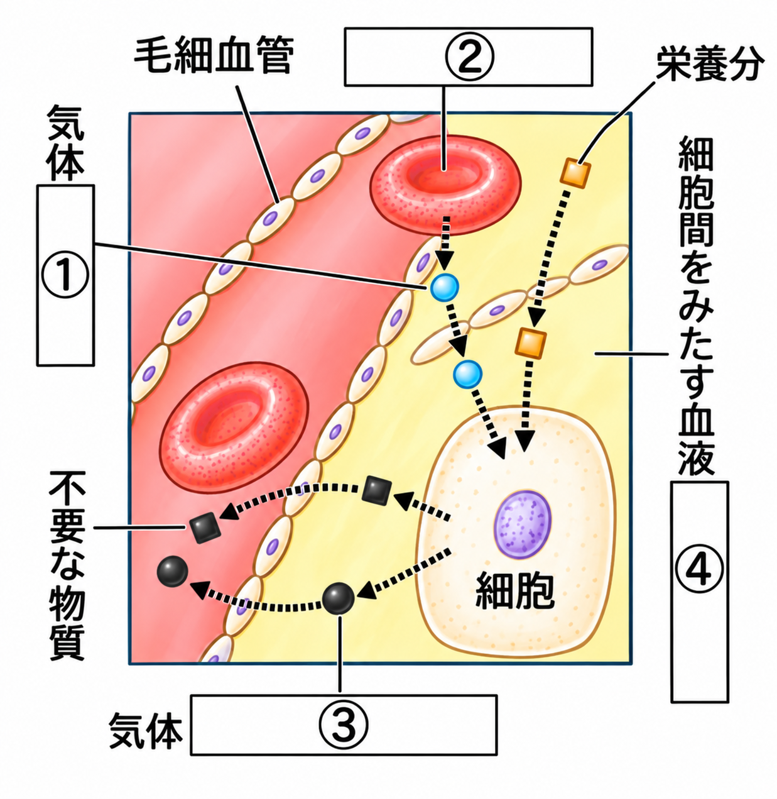
ここまで学んだ「呼吸のしくみ」「肺の模型」「肺胞」について、入試問題で確認しましょう。
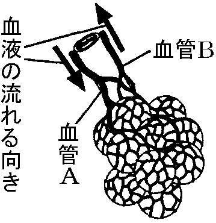
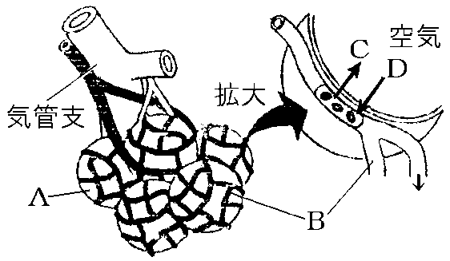
A：気管支の先に多数ある小さなふくろ B：Aをとり囲む血管 C・D：Bの中の血液とAの中の空気の間でやりとりされる物質
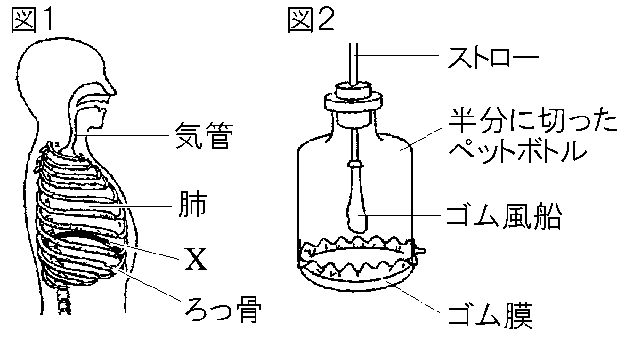
図1のXは①という膜で、図2の②にあたる。図2のゴム風船は③、ストローは④にあたる。ゴム膜をつまんで下に引くと、ゴム風船は⑤。これは息を⑥ときのようすを表している。
「血液の成分」「組織液」について、入試問題で確認しましょう。
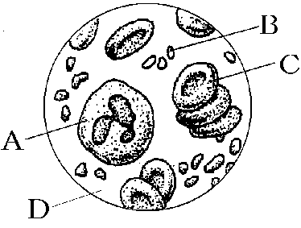
Aは①といい、細菌などの異物を分解してからだを守っている。小さく不規則な形をしているBは②といい、出血した血液を固めるはたらきがある。Cは③といい、中央がくぼんだ円盤状の形をしている。③の中には④という色素がふくまれている。④は⑤と結びついて⑤を全身の細胞へ運んでいる。血液の液体成分であるDは⑥といい、養分や不要物を運ぶ。
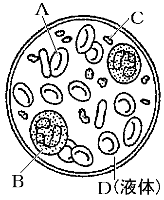
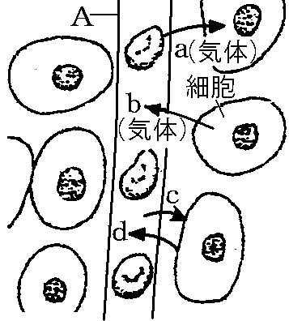
Aは、かべがうすい1層の細胞からできた非常に細い血管で、①という。血液の液体成分である②は、Aのすき間からしみ出て細胞のまわりを流れ、③となる。血液中では、④という成分の⑤という色素のはたらきによって酸素が運ばれている。